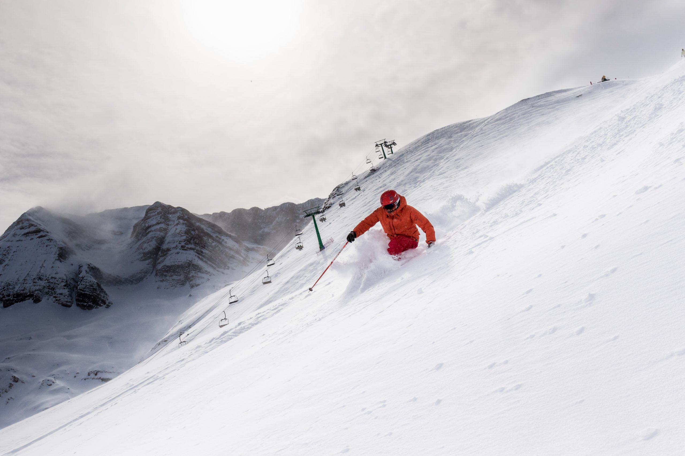

La estación de esquí de Panticosa se encuentra en el valle de Tena, en el Pirineo aragonés. Es conocida por su ambiente familiar y su entorno natural, ofreciendo una experiencia de esquí rodeada de impresionantes paisajes montañosos. Con una altitud máxima de 2.200 metros, garantiza nieve de excelente calidad durante gran parte de la temporada. Panticosa dispone de una variada oferta de pistas para todos los niveles, con un total de 39 km esquiables distribuidos en más de 40 pistas. La estación cuenta con modernos sistemas de remontes y una infraestructura adaptada para ofrecer la mejor experiencia a los esquiadores. Los visitantes pueden disfrutar de vistas espectaculares de los picos más emblemáticos, como el Garmo Negro y el Argualas. Además, la estación cuenta con un área destinada al freestyle y snowpark, así como diversas opciones de senderismo y actividades alternativas para aquellos que prefieren experiencias fuera del esquí. Con su ambiente acogedor y la hospitalidad típica de la región aragonesa, Panticosa es el destino perfecto para familias y esquiadores que buscan combinar deporte y naturaleza.
